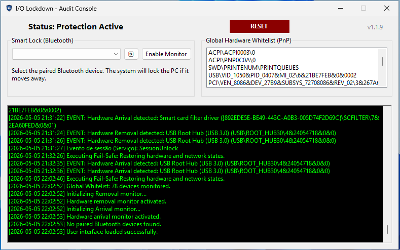

Advanced Windows endpoint protection designed to mitigate BadUSB, Rogue Adapters, and unauthorized physical access through automated fail-close policies.

Audit Console — Real-time PnP whitelist & event log
Zero-trust applied to physical ports. When the workstation locks, the digital drawbridge is raised, severing all potential exfiltration vectors. Any hardware change — insertion or removal — triggers an immediate response.
Instant USBSTOR revocation upon lock state entry. Trusted device removal while unlocked locks the workstation immediately.
Software-defined network isolation during unauthorized presence states. Restored automatically on safe unlock — disabled permanently on violation.
Once a violation is detected, the locked state persists through session unlocks. Network and USB access require explicit manual reset via the Audit Console.
Hardened protection for sensitive Windows endpoints.
Instantly triggers security protocols upon Win+L or automated lock timers. WMI and WM_DEVICECHANGE watchers activate simultaneously.
Detects unauthorized hardware insertion and trusted device removal. Both events trigger countermeasures — new devices when locked, missing trusted devices when unlocked.
Monitors a paired Bluetooth device (phone, wearable). Three consecutive absence checks lock the workstation automatically — no software required on the paired device.
I/O Lockdown is most valuable in environments where Windows endpoints remain physically accessible, temporarily unattended, or exposed to shared operational spaces. It complements EDR, antivirus, NAC, and group policies by enforcing physical-port security during locked or unattended states.
Protects radiology, PACS, modality consoles, and clinical workstations where sensitive patient data may be exposed during shift changes or technician movement.
Adds fail-close protection for call centers, NOCs, SOCs, help desks, and multi-user terminals where machines may remain logged in but briefly unattended.
Helps protect source code, PCB projects, firmware, CAD files, and research datasets in labs where visitors or contractors may have physical proximity.
Strengthens restricted workstations used in public-sector, defense, incident response, and digital forensics environments where physical compromise is a realistic threat model.
Protects high-value terminals used for banking operations, treasury desks, trading floors, and payment environments where active sessions and network trust are high-impact assets.
Adds protection for notebooks used in airports, hotels, coworking spaces, and client sites where physical access can occur quickly.
Provides a defensive layer for Windows-based SCADA, production, automation, and operator workstations where removable media and technician access are common operational risks.
Download the MSI for direct installation, or build from source using the steps below.
Never run the binary on a development or daily-use machine. Test exclusively in an isolated VM. Accidental triggers disable USB and network adapters, requiring a physical reboot to recover.